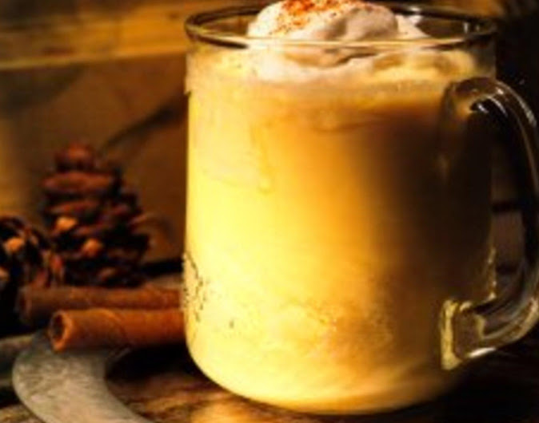

I can't find the recipe I use, but this looks similar
Recipe by Hope Vaillancourt
@MissHopie87

Description
"I got this recipe from my mother's Southern Living Cookbook that she has had for at least 15 years or so. This
eggnog is so creamy and delicious and the nutmeg gives it that bit of spice that makes this creamy holiday treat the
perfect touch. I made this in my teen years a few times for Thanksgiving and Christmas and my family loved it. I
haven't made it in awhile but i'm pretty sure I will be making it for my husband and I this year. Enjoy!"
Ingredients
- 6 lg
eggs, separated
- 3/4 c
sugar
- 1/2 tsp
vanilla extract
- 1/4 tsp
ground nutmeg
- 3 c
whipping cream
- 2 c
milk
- 1/4 c
sugar
***ground nutmeg, for sprinkling
Directions
-
Beat egg yolks until thick and lemon-colored; gradually add 3/4 cup sugar, vanilla and 1/4 tsp nutmeg, beating well at medium speed of an electric mixer. Cover & chill for 8 hours.
-
Place chilled mixture in a punch bowl. Gradually stir in cream & milk. Beat egg whites (at room temperature) in a large mixing bowl until soft peaks form. Gradually add 1/4 cup sugar and beat until stiff. Fold whites into chilled mixture. Sprinkle with nutmeg.
- Feel free to add cinnamon sticks or candy canes into your glass of eggnog for added flavor. You can also top with whip cream.